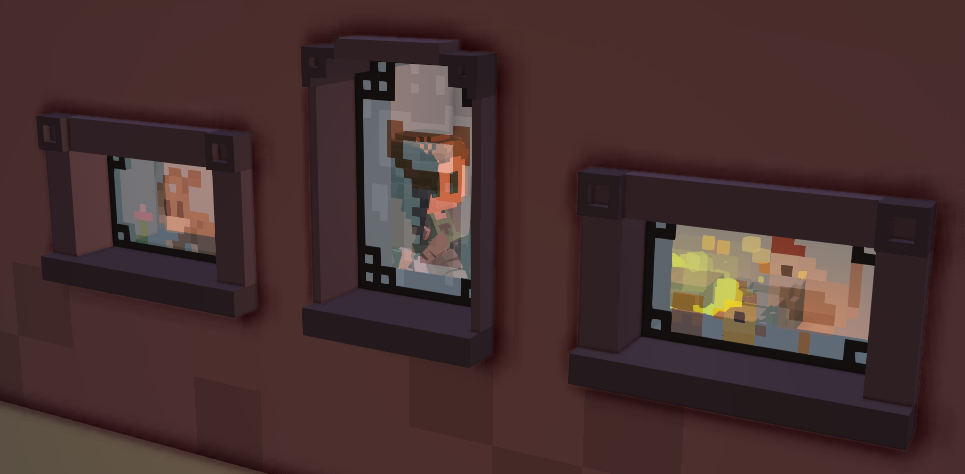

Pipelines and contexts
In Stonehearth we use a renderer called Horde3D, and pipelines and contexts are constructs of that renderer. A pipeline is an XML file that describes what gets rendered when in a frame.
It indicates when a thing gets rendered implicitly by the order of the commands in the file, and it indicates what gets rendered by specifying a context in the attribute of a given command.
You can find them in stonehearth/data/horde/pipelines.
For example, this is the fog of war pipeline (fow.pipeline.xml):
<Pipeline name="FOW">
<Setup>
<GlobalRenderTarget id="FogOfWarRT" />
</Setup>
<CommandQueue>
<Stage id="FogOfWar_RT">
<SwitchTarget target="FogOfWarRT" />
<ClearTarget colBuf0="true" depthBuf="true" col_A="0.33" />
<DrawGeometry scene="0" context="HEIGHT" forceLodLevel="0" cached="false"/>
<DrawGeometry context="FOW_RT_EXPLORED" forceLodLevel="0" cached="false"/>
</Stage>
</CommandQueue>
</Pipeline>
Let's take a single command as an example from this:
<DrawGeometry context="FOW_RT_EXPLORED" forceLodLevel="0" cached="false"/>
Here, DrawGeometry is the command, and FOW_RT_EXPLORED is the context. The other attributes are arguments passed to the DrawGeometry command.
The context is essentially a tag to tell the renderer what to draw. In this case, all of the objects with a material that has the FOW_RT_EXPLORED context will be rendered, and the shader specified in that context for that material will be used to do the rendering.
There are two main pipelines in the game, forward and forward_postprocess. The forward_postprocess pipeline is the high quality renderer. You can add your own contexts to the pipelines by overwriting the .xml files (which might be bad for compatibility with other mods, if someone else overrides those same files) or just implement one or more of the existing contexts in your shaders.
More info about Horde3D pipelines here. (Note that Stonehearth's version of Horde3D is slightly different, but this is mostly correct.)
Render materials
Inside stonehearth/data/horde/materials we have a bunch of JSON files that end with ".material.json". This is just a naming convention in the same way our cubemitter files (particle effects) end with ".cubemitter.json".
These are the materials that define how to render the 3D models inside the game.
Let's take a look to glowy_voxel.material.json:
{
"materials" : {
"VOXEL" : {
"name" : "materials/voxel.material.json",
"inputs" : [
{
"name" : "glossy",
"bind_to_material_input" : "glossy"
}
]
}
},
"shaders" : {
"EMISSIVE" : {
"state" : "states/voxel/replace.state",
"shader" : "shaders/color_only.shader"
},
"EMISSIVE_ADD" : {
"state" : "states/voxel/add.state",
"shader" : "shaders/color_only.shader"
}
}
}
There are relative paths here. If we were to copy this file to our mod and use it for one of our entities, these paths would be read from the stonehearth/data/horde directory by default, unless we change them to absolute paths referencing our mod's folder.
Materials are composable. A material can optionally specify 'sub-materials' to include in itself, inside the "materials" entry. All sub-materials are included and flattened (recursively) to create the new material.
Materials that include materials can still specify shaders, and those contexts will override the included materials.
The "shaders" entry points to states and shaders. All .shader files are written in GLSL, and only contain one vertex program and one fragment program. Shaders used in the game can be found in stonehearth/data/horde/shaders.
Shader state (blending, etc) has been disentangled from shader declaration, and so can be reused as well (you can find them inside stonehearth/data/horde/states).
A material therefore declares the contexts being implemented, and binds shaders, shader states, and uniform inputs to create a context. It can also declare uniform inputs to the material, and bind them to shader uniforms. These material-level inputs form the 'interface' to the material, if you like. Example from starfield.material.json:
{
"shaders" : {
"STARFIELD" : {
"state" : "states/voxel/stars.state",
"shader" : "shaders/starfield.shader",
"inputs" : [
{
"name" : "brightness",
"default" : [1.0, 1.0, 1.0, 1.0],
"bind_to_material_input" : "brightness"
}
]
},
"STARFIELD_DEFERRED" : {
"state" : "states/voxel/stars_deferred.state",
"shader" : "shaders/starfield.shader",
"inputs" : [
{
"name" : "brightness",
"default" : [1.0, 1.0, 1.0, 1.0],
"bind_to_material_input" : "brightness"
}
]
}
},
"inputs" : [
{
"name" : "brightness",
"default" : [1.0, 1.0, 1.0, 1.0]
}
]
}
No attempt is made to deal with multiple conflicting shaders from different materials; the winner is the one that wins.
Also, you cannot adjust an included material's shader uniforms; you can ONLY adjust the material's inputs. Think of shader uniform defaults as private variables, and material uniforms as public, overridable variables.
Let's check out ghost_item.json as an example. Here, transparent_with_depth.material.json exposes the "alpha" uniform in its "inputs" section. We rewire it to be bound to our own "alpha" input:
{
"materials" : {
"SELECTABLE" : {
"name" : "materials/selected.material.json"
},
"TRANSPARENT" : {
"name" : "materials/transparent_with_depth.material.json",
"inputs" : [
{
"name" : "alpha",
"bind_to_material_input" : "alpha"
}
]
}
},
"inputs" : [
{
"name" : "alpha",
"default" : [0, 0, 0, 0.3]
}
]
}
GLSL, the shader language
There's a lot to GLSL and good resources out there, so we won't go over all of it here. We will go over the basics though, and point you to where you can learn more.
Shaders are programs that run on your GPU to render triangles. As we mentioned above Stonehearth uses two types of shader programs: vertex programs and fragment programs.
Vertex programs take the vertices of a model one at a time as input and transform them for consumption of the fragment programs. The typical first step is to transform the position of the vertex to camera space so it appears in the correct place on the screen.
The vertex program in color_only.shader looks like this:
#include "shaders/utilityLib/vertCommon.glsl"
uniform mat4 viewProjMat;
attribute vec3 vertPos;
attribute vec4 color;
varying vec4 outColor;
void main() {
outColor = color;
gl_Position = viewProjMat * calcWorldPos(vec4(vertPos, 1.0));
}
It takes the color from each vertex and puts it in outColor for the fragment shader, and transforms vertPos to camera space by first calculating the world position with a helper function that was imported from vertCommon.glsl then multiplying the view projection matrix.
The fragment shader calculates the color of each fragment, where a fragment is basically a pixel on the screen. The varying values in the vertex shader are interpolated over the fragments that make up the face of the triangle being rendered. So if we have varying float x, and the value of x is 1.0 for one vertex, and it's 0.0 in another vertex in the same triangle, the fragment in between the two will get x = 0.5 automatically.
The fragment program in color_only.shader looks like this:
varying vec4 outColor;
void main() {
gl_FragColor = outColor.rgba;
}
Here we're saying that every interpolated color gets assigned to the output color with no changes.
.shader files in Stonehearth have three sections:
- [[FX]] for declaring inputs to our shader.
- [[VS]] for declaring vertex shaders.
- [[FS]] for declaring fragment shaders.
Separate .glsl files can be imported inside the shaders, which can be useful for sharing GLSL code between shaders.
The full color_only.shader file looks like this:
[[FX]]
[[VS]]
#include "shaders/utilityLib/vertCommon.glsl"
uniform mat4 viewProjMat;
attribute vec3 vertPos;
attribute vec4 color;
varying vec4 outColor;
void main() {
outColor = color;
gl_Position = viewProjMat * calcWorldPos(vec4(vertPos, 1.0));
}
[[FS]]
varying vec4 outColor;
void main() {
gl_FragColor = outColor.rgba;
}
 Technical note: in Stonehearth our shaders are written using a slightly older version of GLSL, which means we have some deprecated keywords like 'varying' and 'attribute'. They are still valid in compatibility contexts, more information on that can be found here.
Technical note: in Stonehearth our shaders are written using a slightly older version of GLSL, which means we have some deprecated keywords like 'varying' and 'attribute'. They are still valid in compatibility contexts, more information on that can be found here.
For more information on GLSL you can dive into their docs here.
Testing shaders
You can enable this property in your user_settings.json to be able to test changes to shaders and cubemitter files without needing to restart the game:
"enable_renderer_file_watcher" : true
It should be at the same level than your user_id, make sure to add commas where needed.
 This option might not always work as expected. You may need to reload the game for the changes to take effect in some cases. Beware of crashes due to wrong filepaths or invalid values in your rendering-related files.
This option might not always work as expected. You may need to reload the game for the changes to take effect in some cases. Beware of crashes due to wrong filepaths or invalid values in your rendering-related files.
Making new render materials and shaders is pretty complex, but if you're feeling adventurous, feel free to copy the existing shaders and tinker with them. Players might have older graphic cards which don't support some of the properties so be careful when creating shaders.
For reference, Stonehearth uses OpenGL 4.1 for the high quality renderer, but the low quality renderer works with older drivers, so you should use old style GLSL. You can specify the version of the program to compile at the top of the shader with the #version pragma. See this page for a reference. However, note that if you use syntax and functions that are exclusive from recent versions like the 4.1, your shaders might break when compiled by older GPU drivers because they don't support those functions.
 Sometimes a shader will cause visual glitches that can be avoided if you split the affected voxels to a separate matrix or layer in the QB model (for models that have materials applied only to some of their colors).
Sometimes a shader will cause visual glitches that can be avoided if you split the affected voxels to a separate matrix or layer in the QB model (for models that have materials applied only to some of their colors).

In the current version of the game, it is a known issue that entities that have render materials won't show an outline when trying to select them. The parts of the model that have the custom render material will show an incorrect selection color.